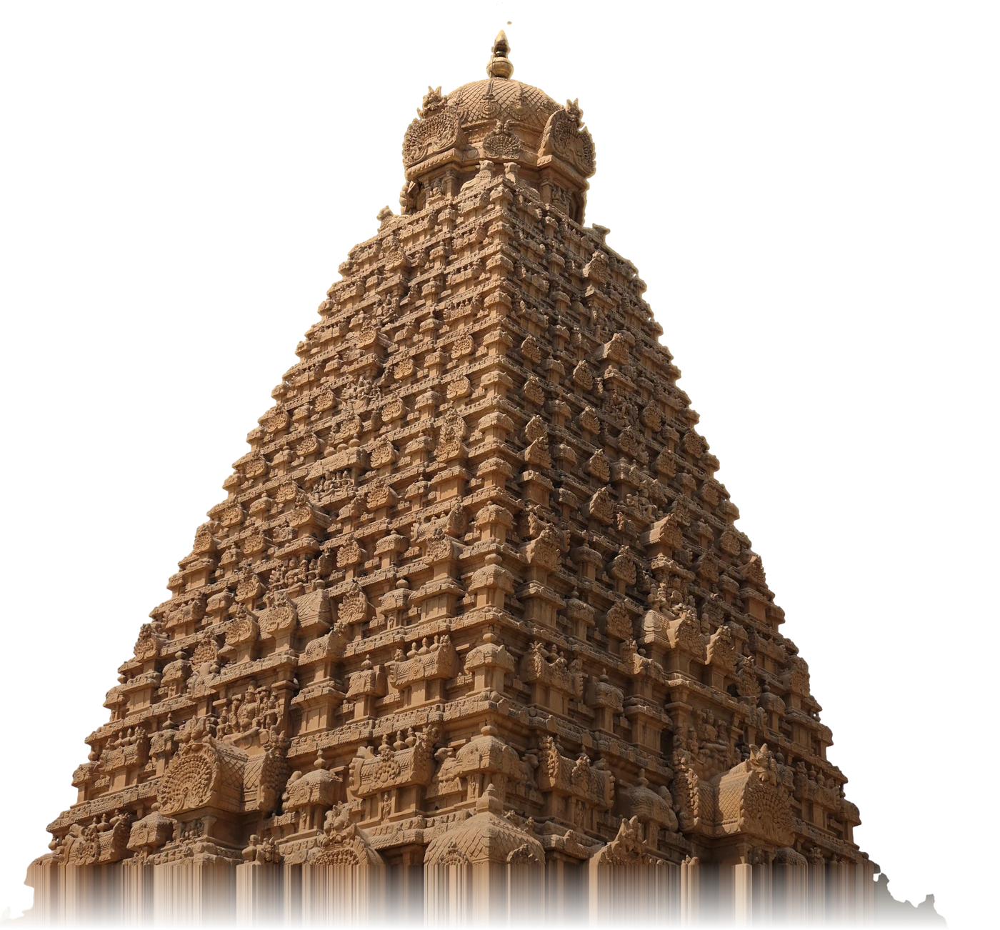
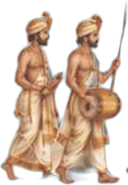
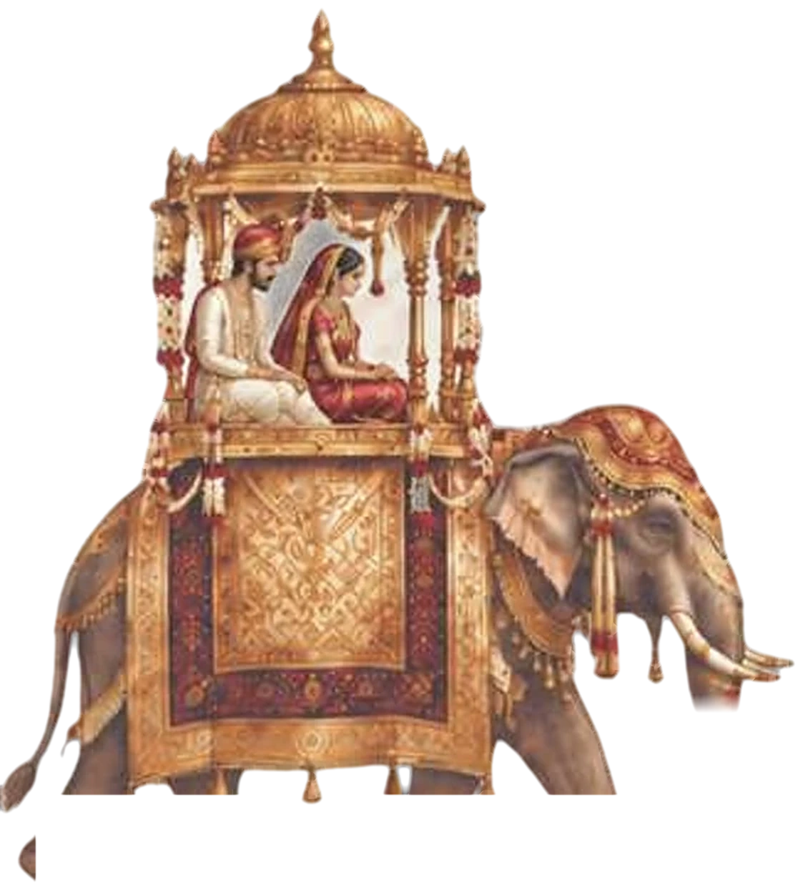
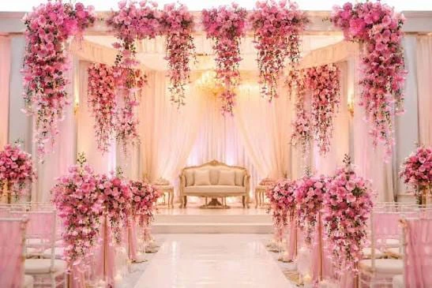
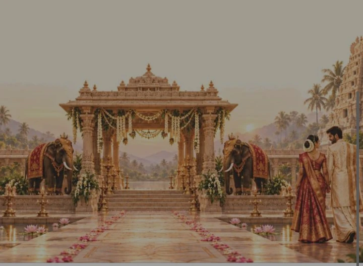

மங்கள ஊர்வலம் · the wedding procession






இறையருளுடன்
with the blessings of
திருவள்ளூர் ஸ்ரீ வைத்திய வீரராகவ ஸ்வாமி · ஸ்ரீ பெரிய நாச்சியம்மன் · ஸ்ரீ அருள்மிகு கனக தோணியம்மன்
ஸ்ரீ கணேசாய நம:
அன்புடையீர் · with joy
திரு. K. வெங்கடேசன் – திருமதி. S. அமிர்தம்&திரு. K. ஜெய்சங்கர் – திருமதி. J. சசிகலா
request the honour of your presence at the wedding of their children
ஜெ. சுனில் பிரகாஷ்B.Tech., M.Eng.
weds
வெ. பிரியதர்ஷினிM.Sc.
இரு குடும்பங்கள்
Two families, one celebration


மணமகன் · ஜெ. சுனில் பிரகாஷ்
புதல்வன்: திரு. K. ஜெய்சங்கர் – திருமதி. J. சசிகலா
பேரன்: திரு. M.K. கிருஷ்ணமூர்த்தி – திருமதி. K. பத்மாவதி · திரு. R. லோகநாதன் – திருமதி. ராஜேஸ்வரி
திருவெற்றியூர், திருவள்ளூர்

மணமகள் · வெ. பிரியதர்ஷினி
புதல்வி: திரு. K. வெங்கடேசன் – திருமதி. S. அமிர்தம்
பேத்தி: தெய்வத்திரு. கண்ணையன் – திருமதி. அகிலாண்டம் · S. சேசு – S. லட்சுமி
ராமானுஜம் நகர், கரூர்


நிகழ்ச்சி நிரல்
Two days of celebration
புதன் · 17 பிப்ரவரி
மதிய விருந்து
மதியம் 12.00 – 2.00
புதன் · 17 பிப்ரவரி
வரவேற்பு · Reception
மாலை 6.30 முதல்
வியாழன் · 18 பிப்ரவரி
சுபமுகூர்த்தம் · Wedding
காலை 8.30 – 9.30
வியாழன் · 18 பிப்ரவரி
சம்பந்தி விருந்து
மதியம் 12.00 – 1.00


கற்பக மஹால்
Karpaga Mahal
சேலம் மெயின்ரோடு, வெண்ணெய்மலை,
கரூர் · Salem Main Road, Vennaimalai, Karur
முகூர்த்தம் வரை · until the muhurtham


தங்கள் நல்வரவை நாடும்
இணைந்த சொந்தமும் – இணைபிரியாத நட்பும்
Sunil & Priya
With love, the families of the bride and groom